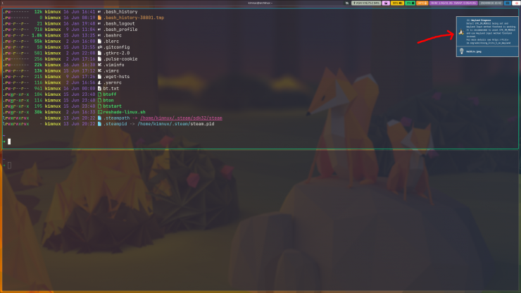
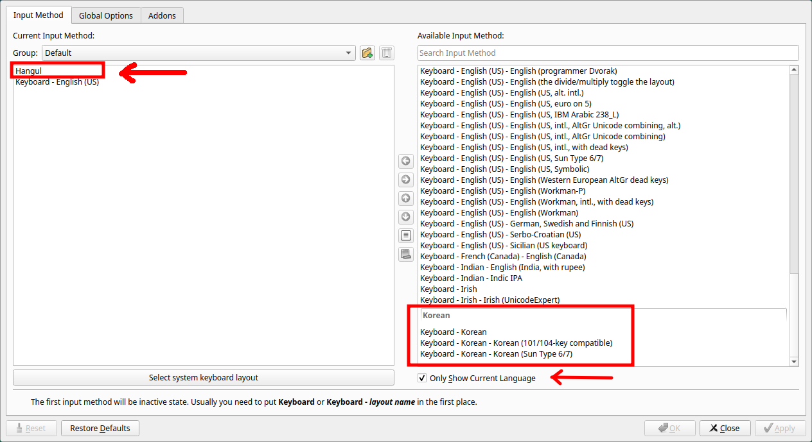
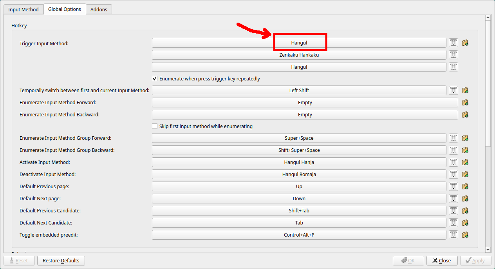
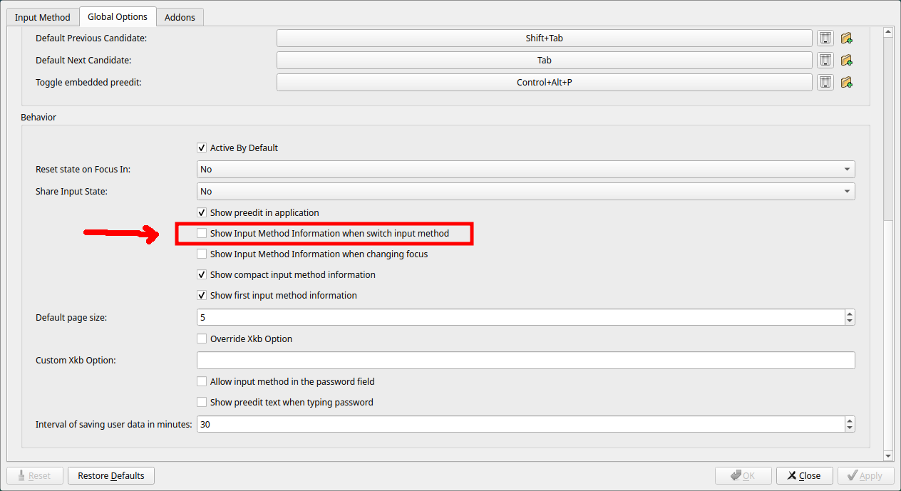

1. xwindow에서 wayland로 옮긴 이유.
유튜브 동영상이 xwindow에서는 30-40fps정도로 플레이되는 느낌.
hyprland로 옮기고 나서 제대로 부드럽게 동작함.
그리고 mesa 24.1 + wayland + chromium 조합시 아이유 8k 60fps 가능하게 됨.
(2024년 6월 현재 chromium 126 버전은 버그로 인해 유튜브 동영상 화면이 하얗게 표시된다.
chromium 설정에서 하드웨어 가속을 꺼야 화면이 제대로 나온다.
문제는 하드웨어 가속을 끄면, 8k 가속이 되지 않는다. 하드웨어 가속을 꺼도 4k까지는 아무 문제 없이
잘 나온다.)
chromium을 다운 그레이드 하는 것도 한가지 해결 방법이다. 이전에 받아놓은 캐쉬파일이 존재하는 경우
아래 명령어를 입력하면 다운 그레이드된다. 버전은 사용자마다 다를 수 있다.
--> sudo pacman -U file://var/cache/pacman/pkg/chromium-125.0.6422.141-1-x86_64.pkg.tar.zst
2. xwindow와 wayland(hyprland)의 한글 적용
2-0. 추천 어플
터미널 에뮬레이터 : foot(wayland용), terminator(우클릭으로 환경설정창을 띄워 쉽게 설정가능)
웹브라우저 : firefox
간단한 한글 설정만으로 편하게 한글을 사용할 수 있다.
그러나, firefox나 google-chrome 등은 아직까지는 8k 가속이 제대로 지원되지 않는다.
2-1. xwindow (kime 사용)
wayland와 비교 시 매우 간단하게 한글 적용이 가능하다.
참고 : https://velog.io/@nal-d/Manjaro-%EC%84%B8%ED%8C%85
.bash_profile에 환경변수만 적어주고 다시 로그인하면, terminator나 firefox에서 한글 사용가능.
2-3. wayland (hyprland, fcitx5 사용)
위에서 추천한 terminator와 firefox를 사용한다면, kime를 이용하여 xwindow와 동일하게 설정하거나,
~/.config/hypr/hyprland.conf에 변수를 설정(아래의 fcitx5 설정에서 fcitx를 kime로 교체)하여
한글을 사용할 수 있다.
다만, kime를 이용할 경우 8k 가속을 지원하는 chromium과 gpu 가속 터미널들(kitty, alacritty,
wezterm 등)에서 한글이 처음에는 입력되다가 창을 다시 띄우거나 하면 한글 입력이 되지 않는 등의
문제점이 발생한다.
결국, 리눅스를 다시 굴리면서 사용해왔던 kime에서 fcitx로 갈아타기로 했다.
구글링 결과 https://www.nemonein.xyz/2024/03/8742/ ,
https://blog.litehell.info/post/fcitx5_for_101_key_keyboard_kde_laptop 등을 참고하여 아래처럼
설정하였다.
2-3-1. 설치 파일 (Arch linux의 경우)
sudo pacman -S –need fcitx5 fcitx5-gtk fcitx5-configtool
2-3-2. 변수 설정
wayland에서는 .bash_profile등에 환경변수로 선언하는 방법을 권장하지 않는다.
그냥 ~/.config/hypr/hyprland.conf에 다음을 기입해준다.
# fcitx5 환경변수 설정
env = XDG_CURRENT_DESKTOP,Hyprland
env = GTK_IM_MODULE,fcitx
env = QT_IM_MODULE,fcitx
env = SDL_IM_MODULE,fcitx
env = GLFW_IM_MODULE,fcitx
env = XMODIFIERS,@im=fcitx
exec-once = fcitx5 -d
참고)

Hyprland를 실행시킬 때 마다 wayland는 위의 그림처럼 wayland IME가 있으니
GTK_IM_MODULE을 사용하지 말라는 알림을 매번 띄우는데, 어쩔 수 없다.
GTK_IM_MODULE을 선언하지 않으면 한글 입력이 되지 않는다.
알림창은 내버려두거나, 클릭하면 사라진다.
2-3-3. fcitx5-configtool 실행

화면 오른쪽에서 Hangul을 선택해서 왼쪽 화면에 넣어주고 Hangul을 왼쪽화면 제일 위로
올려 1순위로 올려준다.
2순위 시에 기본 입력이 한글이 되어 터미널 사용 시에 한영 변환키를 눌러 줘야 영어 입력이
가능해지기 때문에 오히려 더 번거롭게 된다.
혹시 우측에 한글 란이 보이지 않는다면 그림 오른쪽 아래 화살표가 가리키는 곳의 체크를 풀어주고
표시되는 언어들 중에 선택하면 된다.
만약 Hangul을 선택했는데, 한글 입력이 되지 않는다면 오른쪽 하단에 보이는 다른
Keyboard-Korean 중에서 선택해보기 바란다. vxe75의 경우
Hangul 선택 시 제대로 입력되고, 다른 것들은 한글 입력이 되지 않았다.

‘Global Options’탭 선택 후 Trigger Input Method에서 원하는 한영 전환 키를 넣어준다.
기본은 shift+space로 되어있는데, 오른쪽 alt가 편하다면 오른쪽 alt키로 바꿀 수 있다..
빨간 박스 칸을 마우스 클릭 후, 키보드의 오른쪽 alt키를 누르면 빨간 박스처럼 Hangul로 바뀌게 된다.

스크롤을 내려보면 Show Input Method Information when switch input method를
선택 해제한다. fcitx는 기본적으로 한영 전환 시 커서 아래에 한영 전환을 보여 주는
작은 박스를 표시하는데 보기에 거슬리기 때문이다.
※ 위와 같은 설정을 하면 kitty, alacritty 같은 gpu 가속 터미널에서도 kime에서와 같은 오류 없이
한글 입력이 된다.
다만, kitty나 alacritty의 경우 가끔 특정 키를 누르면 unbound keyseq라는 메세지를 출력하면서,
특정 키가 입력이 되지 않는 경우가 생기는데, 이는 위 터미널들의 버그라는 얘기도 있다.
kitty가 특히 심하였으며, 두 가지 중 하나를 반드시 써야겠다면, alacritty가 버그가 적은 듯 하다.
마지막으로 , chromium의 경우 chromium-flags.conf에 다음과 같이 적어 주어야
한글 입력과 동영상 하드웨어 가속이 제대로 된다.
conf파일은 ~/.config 디렉토리 안에 넣어주면 된다.(제대로 안되면 ~/.config/chromium에 넣어볼 것)
nvidia 그래픽 카드는 vulkan 옵션 줄들을 지워줘야 하고, 다른 옵션이 필요한지는 잘 모르겠다.
--enable-vulkan |